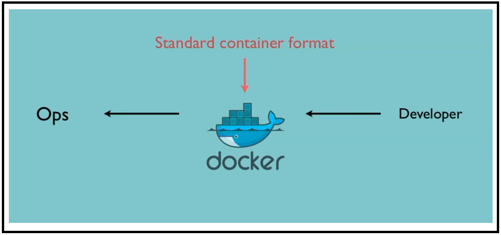
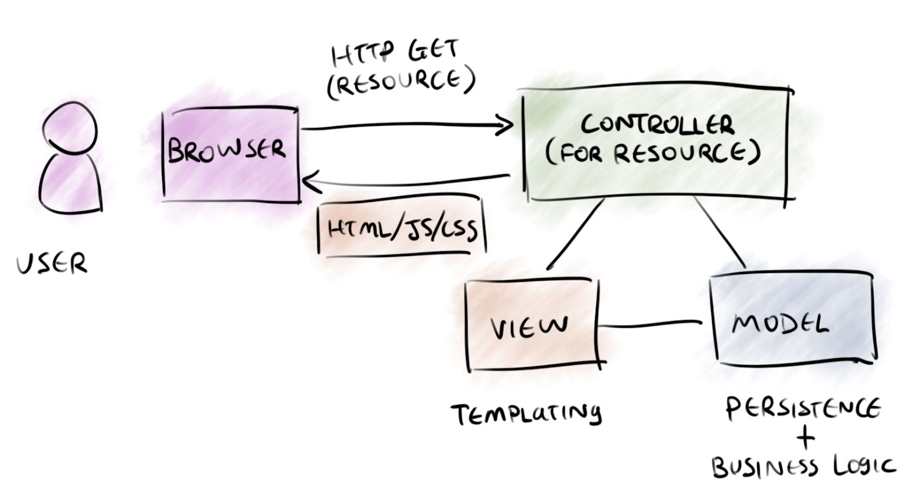

Docker 容器格式化输出命令:
docker inspect --format xxx

大家都很熟悉的 MVC 框架，其中 Model(模型，通常在服务端)用于处理数据、View(视图，客户端代码)用于展现结果、Controller(控制器)用于控制数据流。确保 M 和 V 的同步，即一旦 M 改变，V 也应该同步更新。Go 语言提供了简单灵活的模板支持，而基于 Go 开发的 Docker 继承了该强大能力，使其可以脱离 Shell 的相关操作，直接对结果进行格式化输出。所有支持 --format 扩展的 Docker CLI 指令均支持该操作。
# Go模板常用语法
docker network inspect \
--format='{{/*查看容器的默认网关*/}}{{range .IPAM.Config}}{{.Gateway}}{{end}}' \
$INSTANCE_ID

1. 变量使用 - index
- [1] 系统变量
点号表示当前对象及上下文，和 Java、C++ 中的 this 类似，可以直接通过点来获取当前对象。另外，如果返回结果也是一个 Struct 对象（Json 中以花括号/大括号包含），则可以直接通过点号级联调用，获取子对象的指定属性值。
# 可以通过级联调用直接读取子对象State的Status属性
# 下面命令用于获取容器的状态信息，方便吧
docker inspect --format '{{/*读取容器状态*/}}{{.State.Status}}' $INSTANCE_ID
注意： 如果需要获取的属性名称包含点号（比如下列示例数据）或者以数字开头，则不能直接通过级联调用获取信息。因为属性名称中的点号会被解析成级联信息，进而导致返回错误结果。即便使用引号将其包含也会提示语法格式错误。此时，需要通过 index 来读取指定属性信息。
# 示例演示
"Options": {
"com.docker.network.bridge.default_bridge": "true",
"com.docker.network.bridge.enable_icc": "true",
"com.docker.network.bridge.enable_ip_masquerade": "true",
"com.docker.network.bridge.host_binding_ipv4": "0.0.0.0",
"com.docker.network.bridge.name": "docker0",
"com.docker.network.driver.mtu": "1500"
},
# 直接级联调用会提示找不到数据
docker inspect --format '{{.Options.com.docker.network.driver.mtu}}' bridge
<no value>
# 用引号括起来会提示语法错误
docker inspect --format '{{.Options."com.docker.network.driver.mtu"}}' bridge
Template parsing error: template: :1: bad character U+0022 '"'
# 正确的用法，必须用index读取指定属性名称的属性值
docker inspect --format '{{/*读取网络在hosts上的名称*/}}\
{{index .Options "com.docker.network.bridge.name"}}' bridge
- [2] 自定义变量
可以在处理过程中设置自定义变量，然后结合自定义变量做更复杂的处理。 如果自定义变量的返回值是对象，则可以通过点号进一步级联访问其属性。比如 {{$Myvar.Field1}}。
# 结合变量的使用，对输出结果进行组装展现，以输出容器的所有绑定端口列表
docker inspect --format '{{/*通过变量组合展示容器绑定端口列表*/}}已绑定端口列表：\
{{println}}{{range $p,$conf := .NetworkSettings.Ports}}{{$p}} -> \
{{(index $conf 0).HostPort}}{{println}}{{end}}' Web_web_1
# 示例输出信息
已绑定端口列表：
80/tcp -> 32770
8081/tcp -> 8081
2. 循环遍历 - range
# 格式
{{range pipeline}}{{.}}{{end}}
{{range pipeline}}{{.}}{{else}}{{.}}{{end}}
range 用于遍历结构内返回值的所有数据，支持的类型包括 array, slice, map 和 channel。使用要点：
- 对应的值长度为 0 时，range 不会执行。
- 结构内部如要使用外部的变量，需要在前面加 引用，比如 Var2。
- range 也支持 else 操作。效果是：当返回值为空或长度为 0 时执行 else 内的内容。
# 查看容器网络下已挂载的所有容器名称，如果没有挂载任何容器，则输出 "With No Containers"
docker inspect --format '{{range .Containers}}{{.Name}}{{println}}{{else}}With No Containers{{end}}' bridge
brtest
peaceful_brown
test
docker inspect --format '{{range .Containers}}{{.Name}}{{println}}{{else}}With No Containers{{end}}' none
With No Containers
3. 索引 - index
如果返回结果是一个 map, slice, array 或 string，则可以使用 index 加索引序号（从零开始计数）来读取属性值。
# 示例代码
# docker inspect $INSTANCE_ID 查看容器绑定的端口信息，其 Config 属性就是一个 Map，包含了所有子网信息。
...
"IPAM": {
"Driver": "default",
"Options": null,
"Config": [
{
"Subnet": "172.31.254.1/24",
"Gateway": "172.31.254.1"
}
]
},
...
# 示例操作
# 通过索引序号读取默认网关
docker inspect bridge --format '{{/*查看网络的默认网关*/}}{{(index .IPAM.Config 0).Gateway}}'
4. 条件判断 - if … else … end
- [1] 基本判断
# 1) not
# 返回单一参数的布尔否定值，即返回输入参数的否定值。
# 如果容器的 restarting 设置为 false，则返回信息“容器没有配置重启策略”
docker inspect --format '{{if not .State.Restarting}}容器没有配置重启策略{{end}}' $(docker ps -q)
# 2) or
# {{or x y}}: 表示如果 x 为真返回 x，否则返回 y。
# {{or x y z}}：后面跟多个参数时会逐一判断每个参数，并返回第一个非空的参数。如果都为 false，则返回最后一个参数。
# 除了 null（空）和 false 被识别为 false，其它值（字符串、数字、对象等）均被识别为 true。
# 示例演示
docker inspect --format '{{or .State.Status .State.Restarting}}' $INSTANCE_ID
- [2] 判断条件
# 判断语句通常需要结合判断条件一起使用，使用格式基本相同
{{if 判断条件 .Var1 .Var2}}{{end}}
# go模板支持如下判断方式
# 1) eq: 相等，即 arg1 == arg2
# 2) ne: 不等，即 arg1 != arg2。
# 3) lt: 小于，即 arg1 < arg2。
# 4) le: 小于等于，即 arg1 <= arg2。
# 5) gt: 大于，即 arg1 > arg2。
# 6) ge: 大于等于，即 arg1 >= arg2。
# 输出所有已停止的容器名称：
docker inspect --format '{{if ne 0.0 .State.ExitCode}}{{.Name}}{{end}}' $(docker ps -aq)
docker inspect --format '{{if ne 0.0 .State.ExitCode}}{{.Name}}{{else}}该容器还在运行{{end}}' $(docker ps -aq)
docker inspect --format '{{if ne 0.0 .State.ExitCode}}{{.Name}}{{else if .}}该容器还在运行{{end}}' $(docker ps -aq)
# 输出所有已停止或配置了 Restarting 策略的容器名称
docker inspect --format '{{if ne 0.0 .State.ExitCode}}{{.Name}}{{else if eq .State.Restarting true}}容器{{.Name}}配置了Restarting策略.{{else}}{{end}}' $(docker ps -aq)
5. 打印信息 - print
docker --format 默认调用 go 语言的 print 函数对模板中的字符串进行输出，而 go语言还有另外 2 种相似的内置函数，对比说明如下：
- print
- 将传入的对象转换为字符串并写入到标准输出中。如果后跟多个参数，输出结果之间会自动填充空格进行分隔。
- println
- 功能和 print 类似，但会在结尾添加一个换行符。也可以直接使用 来换行。
- printf
- 与 shell 等环境一致，可配合占位符用于格式化输出。
$ docker inspect --format '{{.State.Pid}}{{.State.ExitCode}}' $INSTANCE_ID
240390
$ docker inspect --format '{{print .State.Pid .State.ExitCode}}' $INSTANCE_ID
24039 0
$ docker inspect --format '{{.State.Pid}}{{println " 从这换行"}}{{.State.ExitCode}}' $INSTANCE_ID
24039 从这换行
0
$ docker inspect --format '{{printf "Pid:%d ExitCode:%d" .State.Pid .State.ExitCode}}' $INSTANCE_ID
Pid:24039 ExitCode:0
6. 管道 - |
管道 即 pipeline ，与 shell 中类似，可以是上下文的变量输出，也可以是函数通过管道传递的返回值。
{{.Con | markdown | addlinks}}
{{.Name | printf "%s"}}
7. 模板及函数
- len
# 内置函数 len 返回相应对象的长度
docker inspect --format '{{len .Name}}' $INSTANCE_ID
- json
# Docker默认以字符串显示返回结果
# 而该函数可以将结果格式化为压缩后的json格式数据
# 获取Config字段对应的json数据
docker inspect --format='{{json .Config}}' $INSTANCE_ID
- join
# 用指定的字符串将返回结果连接后一起展示
# 操作对象必须是字符串数组
# 输出容器配置的所有Entrypoint参数，以 " , " 分隔
docker inspect --format '{{join .Config.Entrypoint " , "}}' $INSTANCE_ID
- lower
# 将返回结果中的字母全部转换为小写
# 操作对象必须是字符串
docker inspect --format "{{lower .Name}}" $INSTANCE_ID
- upper
# 将返回结果中的字母全部转换为大写
# 操作对象必须是字符串
docker inspect --format "{{upper .Name}}" $INSTANCE_ID
- title
# 将返回结果的首字母转换为大写
# 操作对象必须是字符串，而且不能是纯数字
docker inspect --format "{{title .State.Status}}" $INSTANCE_ID
- split
# 使用指定分隔符将返回结果拆分为字符串列表
# 操作对象必须是字符串且不能是纯数字
# 同时，字符串中必须包含相应的分隔符，否则会直接忽略操作
docker inspect --format '{{split .HostsPath "/"}}' $INSTANCE_ID
8. 常用命令
[root@node1 ~]# docker ps
CONTAINER ID IMAGE COMMAND CREATED STATUS PORTS NAMES
2ed603e52896 172.16.60.214:5000/kevin_nginx "/bin/sh -c '/usr/..." 13 minutes ago Up 13 minutes docker-test111
24e6607534f1 172.16.60.214:5000/kevin_nginx "/bin/sh -c '/usr/..." 13 minutes ago Up 13 minutes docker-test11
19be6b264b6e 172.16.60.214:5000/kevin_nginx "/bin/sh -c '/usr/..." 13 minutes ago Up 13 minutes docker-test1
# 1) 获取容器的IP (后面使用容器名或容器ID都可以)
[root@node1 ~]# docker inspect --format='{{range .NetworkSettings.Networks}}{{.IPAddress}}{{end}}' $(docker ps -q)
192.10.160.193
173.20.19.128
17.16.10.128
[root@node1 ~]# docker inspect --format='{{range .NetworkSettings.Networks}}{{.IPAddress}}{{end}}' docker-test1
17.16.10.128
# 2) 获取容器的MAC地址
[root@node1 ~]# docker inspect --format='{{range .NetworkSettings.Networks}}{{.MacAddress}}{{end}}' $(docker ps -a -q)
ee:ee:ee:ee:ee:ee
ee:ee:ee:ee:ee:ee
ee:ee:ee:ee:ee:ee
[root@node1 ~]# docker inspect --format='{{range .NetworkSettings.Networks}}{{.MacAddress}}{{end}}' docker-test1
ee:ee:ee:ee:ee:ee
# 3) 获取容器Name
[root@node1 ~]# docker inspect --format='{{.Name}}' $(docker ps -aq)
/docker-test111
/docker-test11
/docker-test1
/calico-node
[root@node1 ~]# docker inspect --format='{{.Name}}' $(docker ps -aq)|cut -d"/" -f2
docker-test111
docker-test11
docker-test1
[root@node1 ~]# docker inspect --format='{{.Name}}' docker-test1
/docker-test1
[root@node1 ~]# docker inspect --format='{{.Name}}' docker-test1|cut -d"/" -f2
docker-test1
# 4) 获取容器Hostname
[root@node1 ~]# docker inspect --format '{{ .Config.Hostname }}' $(docker ps -q)
2ed603e52896
24e6607534f1
19be6b264b6e
[root@node1 ~]# docker inspect --format '{{ .Config.Hostname }}' docker-test1
19be6b264b6e
# 5) Hostname Name IP
[root@node1 ~]# docker inspect --format 'Hostname:{{ .Config.Hostname }} Name:{{.Name}} IP:{{range .NetworkSettings.Networks}}{{.IPAddress}}{{end}}' $(docker ps -q)
Hostname:2ed603e52896 Name:/docker-test111 IP:192.10.160.193
Hostname:24e6607534f1 Name:/docker-test11 IP:173.20.19.128
Hostname:19be6b264b6e Name:/docker-test1 IP:17.16.10.128
[root@node1 ~]# docker inspect --format 'Hostname:{{ .Config.Hostname }} Name:{{.Name}} IP:{{range .NetworkSettings.Networks}}{{.IPAddress}}{{end}}' docker-test1
Hostname:19be6b264b6e Name:/docker-test1 IP:17.16.10.128
# 6) 获取容器的log path
[root@node1 ~]# docker inspect --format='{{.LogPath}}' `docker ps -a -q`
[root@node1 ~]# docker inspect --format='{{.LogPath}}' docker-test1
# 7) 获取容器的image镜像名称
[root@node1 ~]# docker inspect --format='{{.Config.Image}}' `docker ps -a -q`
172.16.60.214:5000/kevin_nginx
172.16.60.214:5000/kevin_nginx
172.16.60.214:5000/kevin_nginx
quay.io/calico/node:v2.6.10
[root@node1 ~]# docker inspect --format='{{.Config.Image}}' docker-test1
172.16.60.214:5000/kevin_nginx
# 8) 获取容器绑定的端口(port bindings)
[root@node1 ~]# docker inspect --format='{{range $p, $conf := .NetworkSettings.Ports}} {{$p}} -> {{(index $conf 0).HostPort}} {{end}}' `docker ps -a -q`
[root@node1 ~]# docker inspect --format='{{range $p, $conf := .NetworkSettings.Ports}} {{$p}} -> {{(index $conf 0).HostPort}} {{end}}' docker-test1
# 9) 获取service实例的Ip
[root@swarm-manager-node ~]# docker service ps my-test
ID NAME IMAGE NODE DESIRED STATE CURRENT STATE ERROR PORTS
t71gqufekv2o my-test.1 172.16.60.214:5000/kevin_nginx:latest swarm-node2 Running Running 16 seconds ago
9cuq2yf10d60 my-test.2 172.16.60.214:5000/kevin_nginx:latest swarm-manager-node Running Running 16 seconds ago
srt2yo817kpv my-test.3 172.16.60.214:5000/kevin_nginx:latest swarm-node1 Running Running 16 seconds ago
[root@swarm-manager-node ~]# docker inspect ` docker service ps my-test -q` --format '{{range .NetworksAttachments}}{{.Addresses}}{{end}}' | cut -d '[' -f2|cut -d ']' -f1
10.255.0.7/16
10.255.0.8/16
10.255.0.9/16
# 10) 获取service示例的container ID (获取的是ID的全称,一般只要取ID前面12个字符就可以了)
[root@swarm-manager-node ~]# docker inspect ` docker service ps my-test -q` --format '{{ .Status.ContainerStatus.ContainerID }}'
c6c18a74a465163757fe928fec9e633223200f92d1c59e5d2d77eabfaa5ae93a
5f558bb014ea3d3eef5c8d4bd70e2e3048d7fc6725538303be960ac658d93b32
dde578bf60190a63ed5c8c4a9f5a3044566a159e8debe8717342e263c6199f26